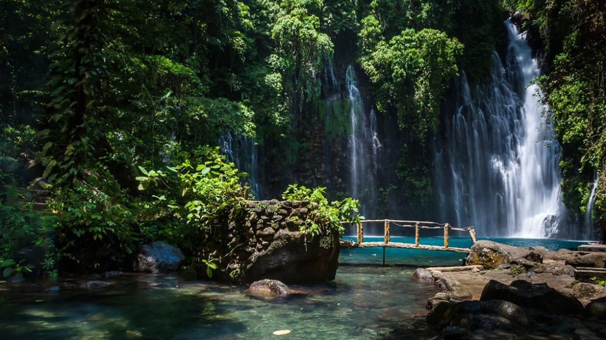
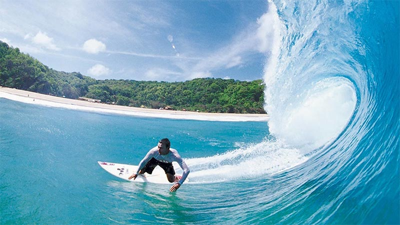
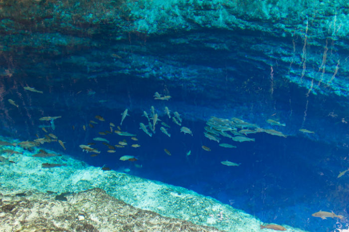
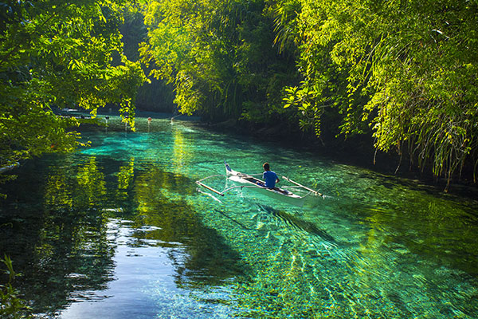
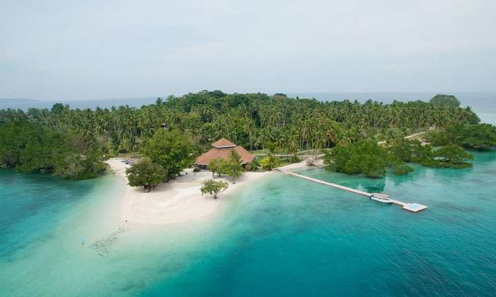
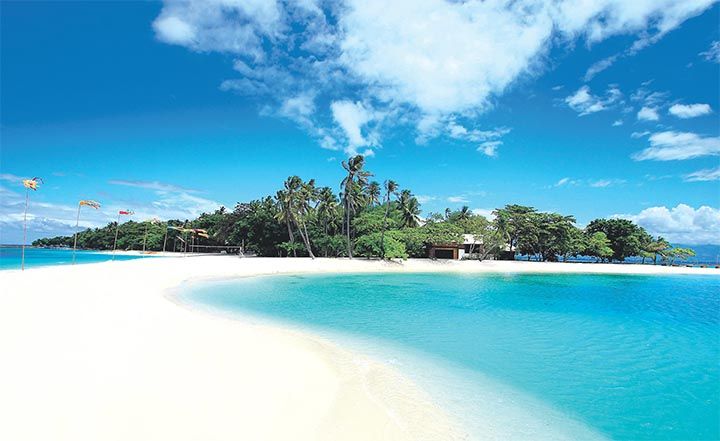

Tinago Falls, Iligan
Tinago Falls in Iligan City is one of the main tourist attractions in Iligan, a city known as the City of Majestic Waterfalls. Inorder to reach this falls, you need to walk down in a 444 steps lather. And its a real long walk, but if you reach the water falls you will really be amazed by the beauty of Tinago Falls.Total height 73.152 m (240.0 ft), Number of drops 5, Longest drop 73.152 m (240.0 ft)
The moniker Tinago Falls was coined from a Tagalog word which means concealed or hidden since the falls requires an estimate of 500 downhill, winding steps before it can be reached.

Siargao Island
Once a well-kept secret in surfing circles, the island of Siargao has slowly become one of the most sought-after destinations in the world. Discover why this tiny haven with world-class waves, white sand islets, turquoise tide pools, and hidden lagoons was hailed as the world’s most beautiful island back in 2018.
What sets Siargao apart from other beach islands in the Philippines is its distinction as the surfing mecca of the south. It is a literal surfer’s paradise, with seven-foot waves available for most of the year (from September to May) in the clear blue waters of the Pacific.


Enchanted River, Hinatuan
Enchanted River in Hinatuan is one of the most popular tourist attractions in Surigao del sur and the rest of Mindanao. With its clear shimmery deep blue water, teh river provides an enchanting scene that will sfun local and foreign tourist by the river's awe-striking beauty. Submerge yourself into the clear waters of the Enchanted River of Surigao del sur!


Samal Island, Davao
Samal Island is known as the largest resort city in the Philippines because it's home to over 30 resorts dotted in its white-sand beaches and islands like Kaputian Beach, Canibad Beach, Talikud Island, and many more. The best part of staying in Samal Island is the feeling of seclusion and privacy, as it has fewer crowds compared to other resort cities in the Philippines. Aside from beautiful beaches, Samal Island tours will also have you exploring its many snorkeling and diving spots and natural attractions.